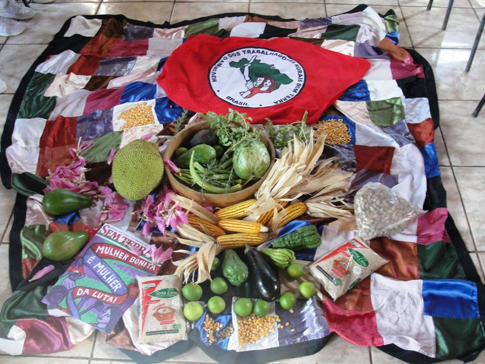
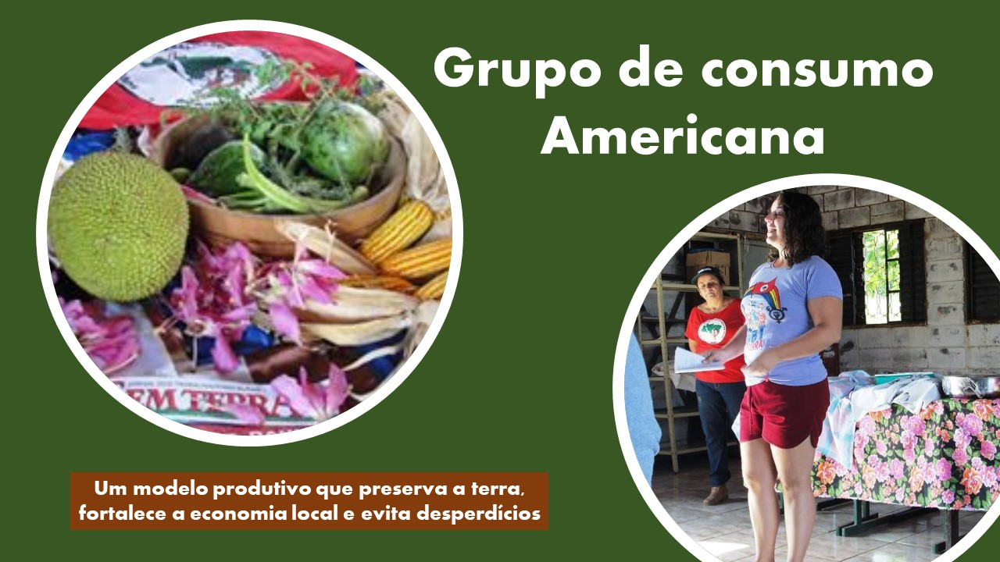

Os grupos de consumo foram criados, principalmente, para viabilizar o escoamento da produção das famílias assentadas, visto a diminuição das compras no mercado institucional e nos investimentos para a agricultura familiar.
Porém, a relação de compra/venda entre os agricultores assentados e os consumidores não poderia ser empreendida com a exploração desmedida da terra ou dos agricultores ou dos consumidores - esses vistos como trabalhadores que possuem o direito de se alimentarem de forma saudável e com alimentos livres de venenos e agrotóxicos. Sendo assim, implementou-se a realização de formações e rodas de conversas com as pessoas interessadas em adquirir esses alimentos, para adequar as formas de compra e venda. Além disso, permitir o esclarecimento aos consumidores sobre a pressão do sistema agroalimentar na cadeia produtiva da agricultura familiar e propor aos grupos alternativas e experiências que contornam o modelo clientelista, com práticas de venda direta, circuitos de proximidade e circuitos curtos de comercialização.
Atualmente, os grupos de consumo formados têm seu próprio arranjo comercial e recebem de acordo com a periodicidade acordada. As cestas agroecológicas são formadas por um combinado de alimentos in natura e processados, além de produtos artesanais como pães e temperos preparados por agricultores e agricultoras cooperados.
Os grupos de consumo têm entregue a média de 250 cestas por mês no período iniciado pelo 2º semestre de 2019, além da venda em feiras pré-determinadas, aumentando as rendas das famílias produtoras cooperadas e aumentando a abrangência do território em que atuam pelo estabelecimento de redes sociotécnicas.
Grupos de consumo: Americana

O grupo teve início em 07 de agosto de 2017, foi realizada uma formação e conversa para decidir questões sobre as entregas, junto com os primeiros consumidores. Atualmente não é realizada formação inicial, no entanto é feita uma conversa explicativa sobre o grupo, cestas, modo de produção e comercialização antes de entrarem no grupo.
Endereço:
R. José Bonifácio, 381 - Chácara Machadinho I, Americana - SP, 13478-040
Entregas:
Semanalmente às Segundas-Feiras
Horário:
18h30 às 20h
Grupos de consumo: Estrela Libre/ IFSP Campinas
O grupo teve início em 31 de agosto de 2017, foi realizada uma formação junto com os primeiros consumidores, posteriormente ao início do grupo mais duas formações já foram realizadas. No entanto Este grupo é exclusivo para os professores, técnicos e estudantes do IFSP e também para os servidores do CTI.
Endereço:
CTI Renato Archer - Av. Comendador Aladino Selmi, s/n - Chácaras Campos dos Amarais, Campinas - SP, 13069-901
Entregas:
Quinzenalmente às 1ªs (primeiras) e 3ªs (terceiras) quartas-feiras de cada mês.
Horário:
14h00 às 15h00
Grupos de consumo: Sindicato dos Petroleiros(Campinas)
O grupo teve início em 10 de agosto de 2017, foi realizada uma formação junto com os primeiros consumidores, posteriormente uma conversa para decidir questões sobre as entregas. Atualmente não é realizada formação inicial, no entanto é feita uma conversa explicativa sobre o grupo, cestas, modo de produção e comercialização antes de entrarem no grupo.
Endereço:
Rua Cônego Manoel Garcia, 1010 - Jardim Chapadão,Campinas - SP, 13070-037
Entregas:
Quinzenalmente às segundas e últimas quintas-feiras de cada mês
Horário:
11h às 12h
Saber Mais...
Facebook Cooperativa Cooperflora
Grupos de consumo: Barão Geraldo
O grupo teve início em 20 de março de 2019, foi realizada uma formação e conversa para decidir questões sobre as entregas, junto com os primeiros consumidores. Atualmente não é realizada formação inicial, no entanto é feita uma conversa explicativa sobre o grupo, cestas, modo de produção e comercialização antes de entrarem no grupo.
Endereço:
STOUT Café, Cultura; Bar - R. Gilberto Pattaro, 105 - Barão Geraldo, Campinas - SP, 13084-375
Entregas:
Quinzenalmente às 1ªs (primeiras) e 3ªs (terceiras) quartas-feiras de cada mês
Horário:
18h30 as 19h30
Saber Mais...
Facebook Cooperativa Cooperflora
Grupos de consumo: Santa Bárbara D’Oeste – SindProSBO
O grupo teve início em 23 de maio de 2019, foi realizada uma conversa junto com uma comissão de professoras representantes do Sindicato dos Professores do município de Santa Barbara D’Oeste sobre as cestas, funcionamento do grupo de consumo, modo de produção e comercialização. A partir de então o próprio grupo se organizou e passaram a realizar a gestão do grupo e a retirada das cestas no Assentamento Milton Santos em Americana.
Endereço:
R. Prudente de Moraes, 431 – Centro – Santa Barbara D’Oeste
Entregas:
Semanalmente as Segundas-Feiras
Horário:
18h00 às 20h
Saber Mais...
Facebook Cooperativa Cooperflora
Grupos de consumo: Piracicaba - ESALQ
O grupo de consumo localizado no município de Piracicaba, na Escola Superior de Agricultura Luiz de Queirós – ESALQ é formado por estudantes deste campus. No entanto, esse grupo tem a especificidade de não ser gerido pela Cooperflora, a iniciativa e gestão desse grupo é feito por pessoas e grupos de estudo e pesquisa em Agroecologia da ESALQ com base nas experiência com os grupos de consumo da Cooperflora em Americana.
Endereço:
Av. Pádua Dias - Agronomia, Piracicaba - SP, 13418-900
Entregas:
Quinzenalmente as Terças-Feiras
Horário:
11h00 as 13h30
Saber Mais...
Facebook Cooperativa Cooperflora